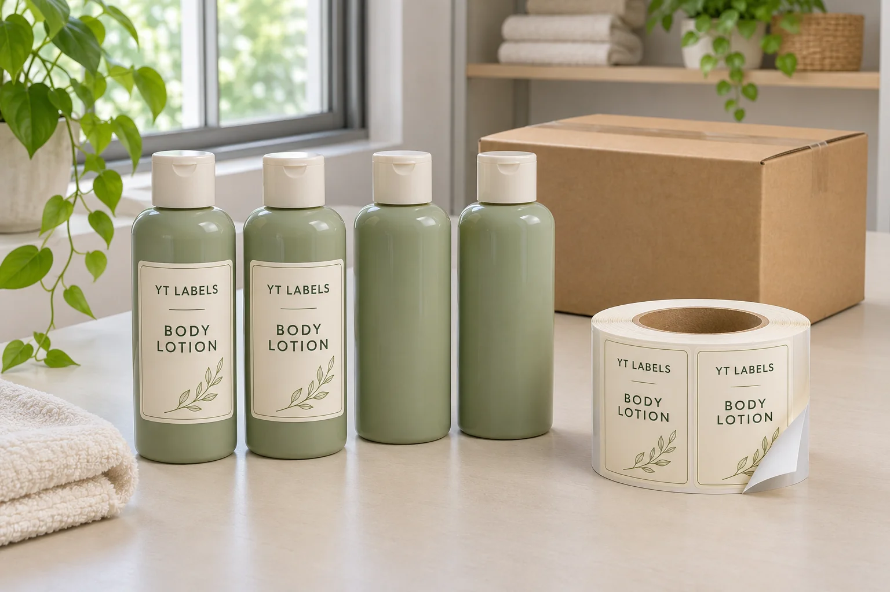
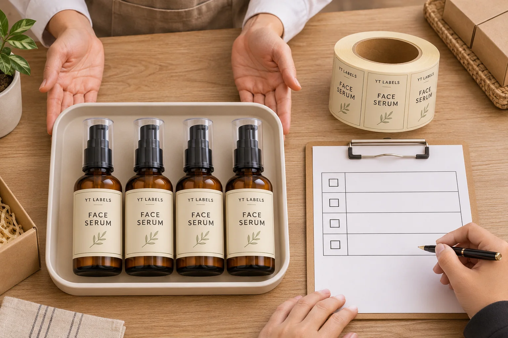

Choose who will apply the labels before ordering the supply format. Keep the work inside your brand when a defined team can handle the actual pack, required quantity and agreed checks. Consider an application provider when it can accept your bottles and labels, complete the required work and deliver identifiable finished packs to the next operation. If a co-packer already applies labels during filling, compare that complete arrangement first.
Buying printed labels and buying label application are different work packages. A brand can purchase its own labels and still have a contractor apply them. The useful comparison ends with correctly identified packs ready for the next agreed stage, rather than with rolls sitting on a desk.

Specify the job you want someone to complete
List the bottle or jar reference, filled or empty state, closure, number of label components and required quantities by SKU. Identify any later coding, cartoning or case packing as separate work. Ask the proposed operator what it accepts and what information or samples it needs before giving a usable quote.
For example, Natural Cosmetic Labs describes label application as a standalone service or part of filling support, with customer-supplied labels considered by project. This shows an actual service arrangement to compare. It does not establish eligibility, charges or capacity for your pack, and YT's printed-label offer should not be treated as an application-service promise.
State where the finished units must go. Receiving filled bottles at a separate labeling site, then forwarding them elsewhere, introduces a different handoff from labeling on the existing filling line. Confirm that each party accepts its incoming unit and understands the required outgoing one. A shipping address alone does not describe the work inside the carton.
Compare internal work with a complete outside proposal
For internal application, identify the people, space, method and available working window. Use a small representative exercise to understand the work and inspection you are actually planning. Count usable completed packs rather than assuming that every label peeled becomes a finished unit. Include preparation, SKU changes, checking, identified rejects and final packing in the time record.
This is a planning exercise, not a universal production-rate test. Do not multiply an unobserved ideal speed by the full working day and call that available capacity. If the team has not tried the actual bottle and label combination, mark the completion time as unconfirmed.
For a contractor, request an offer covering the same pack, quantity, components and outgoing state. Ask what setup, samples, receiving, application, review, packing and onward freight are included. Confirm treatment of missing components and units requiring review. A unit application charge may exclude work that your internal estimate already includes.

Use a four-part application scope brief
| Part | Provide before quoting | Confirm before release |
|---|---|---|
| Incoming components | Container state, SKU list, label components and available quantities. | What the operator accepts, how receipt is reconciled and which missing items hold the job. |
| Application work | Required placement, actual bottle and label references, application window. | Supported method, representative review and operator-specific supplied format. |
| Acceptance and rework | Approved physical reference and the properties that need checking. | Review owner, disposition of uncertain units and responsibility for proposed extra work. |
| Outgoing unit | Finished SKU quantities, coding or packing scope and next receiver. | Identification, count basis, packing and confirmed dispatch conditions. |
Complete the brief, send the same requirement to each route, and ask each operator to state its exclusions. Compare current quoted costs and the internal work record only after the missing fields are answered. If one offer includes final coding and cartoning but another ends at an applied label, request the missing work or remove it consistently from both comparisons.
A hypothetical small launch may suit an internal team that has reviewed the pack and can finish the complete job in the available window. A larger or more complex job may suit a qualified operator with an accepted scope. Neither choice implies a fixed quantity at which outsourcing becomes necessary or cheaper.
Order the labels for the operator you select
Once the application party is chosen, obtain its roll or supplied-format requirements before releasing the label order. Do not order rolls against the printer's default and ask a different operator to accept them afterward. If hand-applied sheets are proposed, confirm that the handling arrangement fits the job.
The line trial guide addresses how the chosen site qualifies a representative run. This article decides where the work belongs and what the service scope must cover. Hold the purchase if nobody accepts a required work stage, if the application input is unconfirmed, or if a comparable completed-pack cost cannot yet be established.
Prepare label requirements for your chosen application route
Send the container, quantities by design, label components, required placement and the selected operator's format requirements. If the operator is undecided, mark the supplied format as open. Ask YT Labels for the printed-label portion of the project. The form prepares a message; attach drawings and photographs through email or WhatsApp.
Prepare an application handoff inquiry